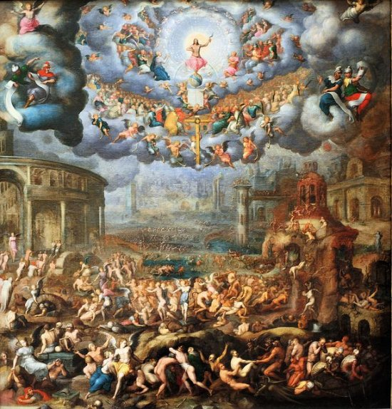

"APOCALIPSE"

"O INFINITO AMOR DE DEUS NOS CONCEDE ATRAVÉS DO APÓSTOLO SÃO JOÃO EVANGELISTA, UMA IDÉIA DO FINAL DOS TEMPOS. A REVELAÇÃO DO SENHOR NÃO QUER ASSUSTAR E NEM CRIAR MEDO NOS CORAÇÕES, SOBRETUDO, QUER NOS INFUNDIR CONFIANÇA, MOSTRANDO QUE O AMOR, O DIREITO, A JUSTIÇA, VENCERÃO COM O PODER DIVINO".

=ÍNDICE=

 - PRELÚDIO
- PRELÚDIO

 - FOTOS + NOTÍCIAS DERRADEIRAS + E-MAIL
- FOTOS + NOTÍCIAS DERRADEIRAS + E-MAIL